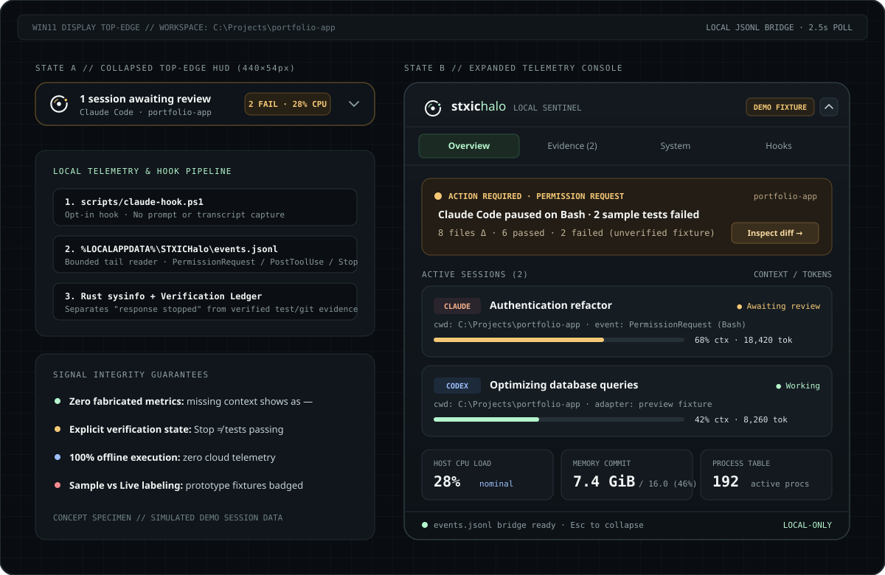

Stay in flow.
Halo keeps watch.
A compact Windows top-edge instrument that tracks background AI coding sessions, approval blocks, and local CPU/RAM pressure—without leaving your editor or sending a single byte to the cloud.
{"source":"claude-code","event":"PermissionRequest","tool_name":"Bash","cwd":"C:\\Projects\\portfolio-app"}
Windows 10/11 (Tauri 2 + Rust) · Simulated demo fixtures clearly badged · Zero prompt or transcript capture

"Agent stopped" does not mean your build passed.
Terminal bells and generic status widgets treat every Stop event as success. Halo separates session lifecycle from actual verification evidence so you know which workspace needs intervention first.
"Claude finished."
- Cannot distinguish a finished refactor from an aborted command or failing test suite.
- Forces you to alt-tab across three terminal windows just to check if approval is waiting.
- Mixes fabricated token estimates with real telemetry.
"Claude awaiting review · 2 tests failed in portfolio-app"
- Surfaces the exact blocking hook event (
PermissionRequest · Bash) in the top-edge capsule. - Explicitly labels missing provider metrics (
—) instead of guessing context percentages. - Pairs lifecycle hooks (v0.1) with planned Git diff & test runner verification (Proof-of-Work v0.2).
Engineered around a verifiable local boundary.
Halo runs as a lightweight native Tauri/Rust process on Windows. It reads only sanitized metadata from its own local JSONL file and OS system calls.
Inspect the top-edge console right in your browser.
Test the collapsed capsule, attention banner, verification ledger, and sanitized event log in our zero-dependency interactive specimen.